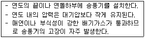
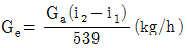

에너지관리기능사 (2014-04-06 기출문제)
1과목: 임의 구분
1. 증기보일러의 케리오버(carry over)의 발생 원인과 가장 거리가 먼 것은?
- 보일러 부하가 급격하게 증대할 경우
- 증발부 면적이 불충분할 경우
- 증기정지 밸브를 급격히 열었을 경우
- 부유 고형물 및 용해 고형물이 존재하지 않을 경우
(정답률: 87%)

2. 보일러의 점화조작 시 주의사항에 대한 설명으로 잘못된 것은?
- 유압이 낮으면 점화 및 분사가 불량하고 유압이 높으면 그을음이 축적되기 쉽다.
- 연료의 예열온도가 낮으면 무화불량, 화염의 편류, 그을음, 분진이 발생하기 쉽다.
- 연료가스의 유출속도가 너무 빠르면 역화가 일어나고, 너무 늦으면 실화가 발생하기 쉽다.
- 프리퍼지 시간이 너무 길면 연소실의 냉각을 초래하고, 너무 짧으면 역화를 일으키기 쉽다.
(정답률: 69%)
3. 보일러 건조보존 시에 사용되는 건조제가 아닌 것은?
- 암모니아
- 생석회
- 실리카겔
- 염화칼슘
(정답률: 77%)
4. 이동 및 회전을 방지하기 위해 지지점 위치에 완전히 고정하는 지지금속으로, 열팽창 신축에 의한 영향이 다른 부분에 미치지 않도록 배관을 분리하여 설치·고정해야 하는 리스트레인트의 종류는?
- 앵커
- 리지드 행거
- 파이프 슈
- 브레이스
(정답률: 74%)
5. 보일러 동체가 국부적으로 과열되는 경우는?
- 고수위로 운전하는 경우
- 보일러 동 내면에 스케일이 형성된 경우
- 안전밸브의 기능이 불량한 경우
- 주증기 밸브의 개폐 동작이 불량한 경우
(정답률: 74%)
6. 매연분출장치에서 보일러의 고온부인 과열기나 수관부용으로 고온의 열가스 통로에 사용할 때만 사용되는 매연분출장치는?
- 정치 회전형
- 롱레트랙터블형
- 쇼트레트랙터블형
- 이동 회전형
(정답률: 79%)
7. 보일러의 자동제어에서 연소제어 시 조작량과 제어량의 관계가 옳은 것은?
- 공기량 – 수위
- 급수량 - 증기온도
- 연료량 – 증기압
- 전열량 - 노내압
(정답률: 69%)
8. 다음 보일러 중 수관식 보일러에 해당되는 것은?
- 타쿠마 보일러
- 카네크롤 보일러
- 스코치 보일러
- 하우덴 존슨 보일러
(정답률: 74%)
9. 보일러 화염검출장치의 보수나 점검에 대한 설명 중 틀린 것은?
- 프레임아이 장치의 주위온도는 50℃ 이상이 되지 않게 한다.
- 관전관식은 유리나 렌즈를 매주 1회 이상 청소하고 강도유지에 유의한다.
- 프레임로드는 검출부가 불꽃에 직접 접하므로 소손에 유의하고 자주 청소해 준다.
- 프레임아이는 불꽃의 직사광이 들어가면 오동작하므로 불꽃의 중심을 향하지 않도록 설치한다.
(정답률: 73%)
10. 열용량에 대한 설명으로 옳은 것은?
- 열용량의 단위는 kcal/g·℃이다.
- 어떤 물질 1g의 온도를 1℃ 올리는데 소요되는 열량이다.
- 어떤 물질의 비열에 그 물질의 질량을 곱한 값이다.
- 열용량은 물질의 질량에 관계없이 항상 일정하다.
(정답률: 66%)
11. 보일러수의 급수장치에서 인젝터의 특징으로 틀린 것은?
- 구조가 간단하고 소형이다.
- 급수량의 조절이 가능하고 급수효율이 높다.
- 증기와 물이 혼합하여 급수가 예열된다.
- 인젝터가 과열되면 급수가 곤란하다.
(정답률: 61%)
12. 물의 임계압력에서의 잠열은 몇 kcal/kg인가?
- 539
- 100
- 0
- 639
(정답률: 71%)
13. 유류 연소시의 일반적인 공기비는?
- 0.95 ~ 1.1
- 1.6 ~ 1.8
- 1.2 ~ 1.4
- 1.8 ~ 2.0
(정답률: 71%)
14. 다음과 같은 특징을 갖고 있는 통풍방식은?

- 자연통풍
- 압입통풍
- 흡입통풍
- 평형통풍
(정답률: 65%)
15. 보일러의 열손실이 아닌 것은?
- 방열손실
- 배기가스열손실
- 미연소손실
- 응축수손실
(정답률: 69%)
16. 일반적으로 보일러 동(드럼) 내부에 물을 어느 정도로 채워야 하는가?
- 1/4 ~ 1/3
- 1/6 ~ 1/5
- 1/4 ~ 2/5
- 2/3 ~ 4/5
(정답률: 78%)
17. 주철제 보일러의 특징 설명으로 틀린 것은?
- 내열·내식성이 우수하다.
- 쪽수의 증감에 따라 용량조절이 용이하다.
- 재질이 주철이므로 충격에 강하다.
- 고압 및 대용량에 부적당하다.
(정답률: 75%)
18. 다음 중 잠열에 해당되는 것은?
- 기화열
- 생성열
- 중화열
- 반응열
(정답률: 82%)
19. 노통 연관식 보일러의 특징으로 가장 거리가 먼 것은?
- 내분식이므로 열손실이 적다.
- 수관식 보일러에 비해 보유수량이 적어 파열시 피해가 작다.
- 원통형 보일러 중에서 효율이 가장 높다.
- 원통형 보일러 중에서 구조가 가장 복잡한 편이다.
(정답률: 71%)
20. 보일러 연소실 내에서 가스 폭발을 일으킨 원인으로 가장 적절한 것은?
- 프리퍼지 부족으로 미연소 가스가 충만되어 있다.
- 연도 쪽의 댐퍼가 열려 있었다.
- 연소용 공기를 다량으로 주입하였다.
- 연료의 공급이 부족하였다.
(정답률: 75%)
2과목: 임의 구분
21. 상당증발량이 6000kg/h, 연료 소비량이 400kg/h인 보일러의 효율은 약 몇 %인가? (단, 연료의 저위발열량은 9700kcal/kg이다.)
- 81.3%
- 83.4%
- 85.8%
- 79.2%
(정답률: 54%)
22. 다음 중 탄화수소비가 가장 큰 액체연료는?
- 휘발유
- 등유
- 경유
- 중유
(정답률: 64%)
23. 무게 80kgf인 물체를 수직으로 5m까지 끌어올리기 위한 일을 열량으로 환산하면 약 몇 kcal인가?
- 0.94kcal
- 0.094kcal
- 40kcal
- 400kcal
(정답률: 46%)
24. 중유의 연소 상태를 개선하기 위한 첨가제의 종류가 아닌 것은?
- 연소촉진제
- 회분개질제
- 탈수제
- 슬러지 생성제
(정답률: 75%)
25. 보일러의 폐열회수장치에 대한 설명 중 가장 거리가 먼 것은?
- 공기예열기는 배기가스와 연소용 공기를 열교환하여 연소용 공기를 가열하기 위한 것이다.
- 절탄기는 배기가스의 여열을 이용하여 급수를 예열하는 급수예열기를 말한다.
- 공기예열기의 형식은 전열방법에 따라 전도식과 재생식, 히트파이프식으로 분류된다.
- 급수예열기는 설치하지 않아도 되지만 공기예열기는 반드시 설치하여야 한다.
(정답률: 80%)
26. 복사난방의 특징에 관한 설명으로 옳지 않은 것은?
- 쾌감도가 좋다.
- 고장 발견이 용이하고, 시설비가 싸다.
- 실내공간의 이용률이 높다.
- 동일 방열량에 대한 열손실이 적다.
(정답률: 79%)
27. 다음 중 보일러 용수관리에서 경도(hardness)와 관련되는 항목으로 가장 적합한 것은?
- Hg, SVI
- BOD, CDD
- DO, Na
- Ca, Mg
(정답률: 75%)
28. 보일러에서 열효율의 향상대책으로 틀린 것은?
- 열손실을 최대한 억제한다.
- 운전조건을 양호하게 한다.
- 연소실 내의 온도를 낮춘다.
- 연소장치에 맞는 연료를 사용한다.
(정답률: 90%)
29. 보일러의 증기관 중 반드시 보온을 해야 하는 곳은?
- 난방하고 있는 실내에 노출된 배관
- 방열기 주위 배관
- 주증기 공급관
- 관말 증기트랩장치의 냉각레그
(정답률: 68%)
30. 강철제 증기보일러의 최고사용압력이 2MPa일 때 수압시험압력은?
- 2MPa
- 2.5MPa
- 3MPa
- 4MPa
(정답률: 59%)
31. 어떤 보일러의 시간당 발생증기량을 Ga, 발생증기의 엔탈피를 i2, 급수 엔탈피를 i1라 할 때, 다음 식으로 표시되는 값(Ge)은?

- 증발률
- 보일러 마력
- 연소 효율
- 상당 증발량
(정답률: 83%)
32. 보일러의 자동제어를 제어동작에 따라 구분할 때 연속동작에 해당되는 것은?
- 2위치 동작
- 다위치 동작
- 비례동작(P동작)
- 부동제어 동작
(정답률: 77%)
33. 정격압력이 12kgf/cm2 일 때 보일러의 용량이 가장 큰 것은? (단, 급수온도는 10℃, 증기엔탈피는 663.8kcal/kg이다.)
- 실제 증발량 1200kg/h
- 상당 증발량 1500kg/h
- 정격 출력 800000kcal/h
- 보일러 100마력(B-Hp)
(정답률: 66%)
34. 프라이밍의 발생 원인으로 거리가 먼 것은?
- 보일러 수위가 낮을 때
- 보일러수가 농축되어 있을 때
- 송기 시 증기밸브를 급개할 때
- 증발능력에 비하여 보일러수의 표면적이 작을 때
(정답률: 53%)
35. 흑체로부터의 복사 전열량은 절대온도의 몇 승에 비례하는가?
- 2승
- 3승
- 4승
- 5승
(정답률: 59%)
36. 수관식 보일러의 특징에 관한 설명으로 틀린 것은?
- 구조상 고압 대용량에 적합하다.
- 전열면적을 크게 할 수 있으므로 일반적으로 효율이 높다.
- 급수 및 보일러수 처리에 주의가 필요하다.
- 전열면적당 보유수량이 많아 기동에서 소요증기가 발생할 때까지의 시간이 길다.
(정답률: 64%)
37. 화염검출기 기능불량과 대책을 연결한 것으로 잘못된 것은?
- 집광렌즈 오염 – 분리 후 청소
- 증폭기 노후 - 교체
- 동력선의 영향 – 검출회로와 동력선 분리
- 점화전극으 고전압이 프레임 로드에 흐를 때 – 전극과 불꽃 사이를 넓게 분리
(정답률: 82%)
38. 유압분무식 오일버너의 특징에 관한 설명으로 틀린 것은?
- 대용량 버너의 제작이 가능하다.
- 무화 매체가 필요 없다.
- 유량조절 범위가 넓다.
- 기름의 점도가 크면 무화가 곤란하다.
(정답률: 40%)
39. 집진장치 중 집진효율은 높으나 압력손실이 낮은 형식은?
- 전기식 집진장치
- 중력식 집진장치
- 원심력식 집진장치
- 세정식 집진장치
(정답률: 72%)
40. 강관 배관에서 유체의 흐름방향을 바꾸는 데 사용되는 이음쇠는?
- 부싱
- 리턴 밴드
- 리듀셔
- 소켓
(정답률: 77%)
3과목: 임의 구분
41. 액체연료에서의 무화의 목적으로 틀린 것은?
- 연료와 연소용 공기와의 혼합을 고르게 하기 위해
- 연료 단위 중량당 표면적을 작게 하기 위해
- 연소 효율을 높이기 위해
- 연소실 열방생률을 높게 하기 위해
(정답률: 75%)
42. 수면계의 점검순서 중 가장 먼저 해야 하는 사항으로 적당한 것은?
- 드레인콕을 닫고 물콕을 연다.
- 물콕을 열어 통수관을 확인한다.
- 물콕 및 증기콕을 닫고 드레인 콕을 연다.
- 물콕을 닫고 증기콕을 열어 통기관을 확인한다.
(정답률: 64%)
43. 팽창탱크 내의 물이 넘쳐흐를 때를 대비하여 팽창탱크에 설치하는 관은?
- 배수관
- 환수관
- 오버플로우관
- 팽창관
(정답률: 77%)
44. 배관 중간이나 밸브, 펌프, 열교환기 등의 접속을 위해 사용되는 이음쇠로서 분해, 조립이 필요한 경우에 사용되는 것은?
- 벤드
- 리듀셔
- 플랜지
- 슬리브
(정답률: 81%)
45. 보일러의 부하율에 대한 설명으로 적합한 것은?
- 보일러의 최대증발량에 대한 실제증발량의 비율
- 증기발생량의 연료소비량으로 나눈 값
- 보일러에서 증기가 흡수한 총열량을 급수량으로 나눈 값
- 보일러 전열면적 1m2에서 시간당 발생되는 증기열량
(정답률: 54%)
46. 난방부하의 발생요인 중 맞지 않는 것은?
- 벽체(외벽, 바닥, 지붕 등)를 통한 손실열량
- 극간 풍에 의한 손실열량
- 외기(환기공기)의 도입에 의한 손실열량
- 실내조명, 전열기구 등에서 발산되는 열부하
(정답률: 79%)
47. 보일러의 수압시험을 하는 주된 목적은?
- 제한 압력을 결정하기 위하여
- 열효율을 측정하기 위하여
- 균열의 여부를 알기 위하여
- 설계의 양부를 알기 위하여
(정답률: 76%)
48. 규산칼슘 보온재의 안전사용 최고온도(℃)는?
- 300
- 450
- 650
- 850
(정답률: 63%)
49. 보일러 운전 중 저수위로 인하여 보일러가 과열된 경우의 조치법으로 거리가 먼 것은?
- 연료공급을 중지한다.
- 연소용 공기 공급을 중단하고 댐퍼를 전개한다.
- 보일러가 자연냉각 하는 것을 기다려 원인을 파악한다.
- 부동 팽창을 방지하기 위해 즉시 급수를 한다.
(정답률: 70%)
50. 보일러 운전 중 1일 1회 이상 실행하거나 상태를 점검해야 하는 것으로 가장 거리가 먼 사항은?
- 안전밸브 작동상태
- 보일러수 분출 작업
- 여과기 상태
- 저수위 안전장치 작동상태
(정답률: 67%)
51. 저탄소 녹색성장 기본법상 온실가스에 해당하지 않는 것은?
- 이산화탄소
- 메탄
- 수소
- 육불화황
(정답률: 75%)
52. 에너지법상 에너지 공급설비에 포함되지 않는 것은?
- 에너지 수입설비
- 에너지 전환설비
- 에너지 수송설비
- 에너지 생산설비
(정답률: 59%)
53. 온실가스 감축 목표의 설정·관리 및 필요한 조치에 관하여 총괄·조정 기능을 수행하는 자는?
- 환경부장관
- 산업통상자원부장관
- 국토교통부장관
- 농림축산식품부장관
(정답률: 60%)
54. 자원을 절약하고, 효율적으로 이용하며 폐기물의 발생을 줄이는 등 자원순환산업을 육성·지원하기 위한 다양한 시책에 포함되지 않는 것은?
- 자원의 수급 및 관리
- 유해하거나 재제조·재활용이 어려운 물질의 사용억제
- 에너지자원으로 이용되는 목재, 식물, 농산물 등 바이오매스의 수집·활용
- 친환경 생산체제로의 전환을 위한 기술지원
(정답률: 49%)
55. 온실가스감축, 에너지 절약 및 에너지 이용효율 목표를 통보받은 관리업체가 규정의 사항을 포함한 다음 연도 이행계획을 전자적 방식으로 언제까지 부문별 관장기관에게 제출하여야 하는가?
- 매년 3월 31일까지
- 매년 6월 30일까지
- 매년 9월 30일까지
- 매년 12월 31일까지
(정답률: 50%)
56. 환수관의 배관방식에 의한 분류 중 환수주관을 보일러의 표준수위 보다 낮게 배관하여 환수하는 방식은 어떤 배관방식인가?
- 건식환수
- 중력환수
- 기계환수
- 습식환수
(정답률: 56%)
57. 세관작업 시 규산염은 염산에 잘 녹지 않으므로 용해촉진제를 사용하는데 다음 중 어느 것을 사용하는가?
- H2SO4
- HF
- NH3
- Na2SO4
(정답률: 57%)
58. 주철제 보일러의 최고사용압력이 0.30Mpa인 경우 수압시험압력은?
- 0.15Mpa
- 0.30Mpa
- 0.43Mpa
- 0.60Mpa
(정답률: 79%)
59. 강관 용접접합의 특징에 대한 설명으로 틀린 것은?
- 관내 유체의 저항 손실이 적다.
- 접합부의 강도가 강하다.
- 보온피복 시공이 어렵다.
- 누수의 염려가 적다.
(정답률: 75%)
60. 에너지이용합리화법상 열사용기자재가 아닌 것은?
- 강철제보일러
- 구멍탄용 온수보일러
- 전기순간온수기
- 2종 압력용기
(정답률: 72%)